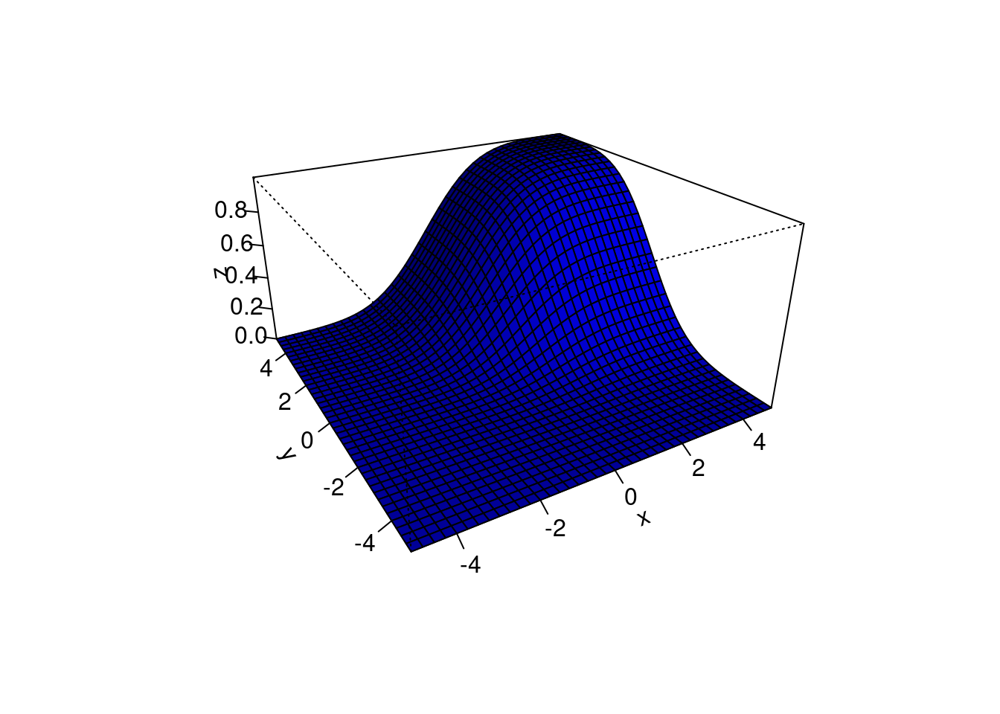
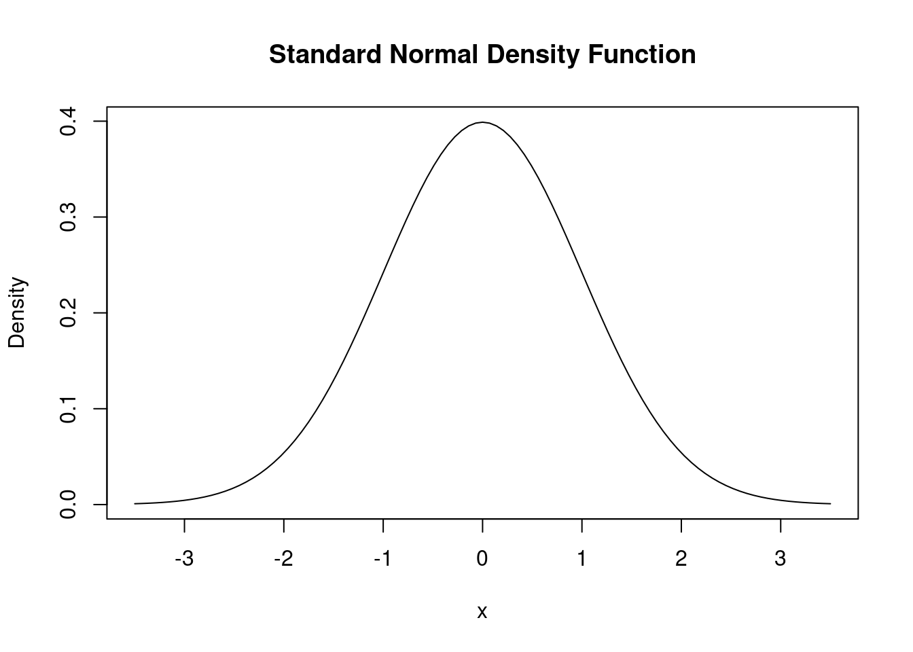
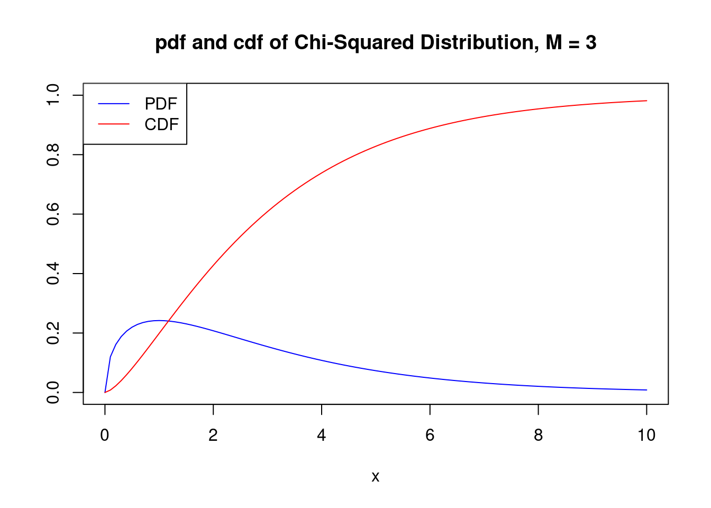

2.2 Random Variables
Statistics and econometrics are concerned with data. How do we link sample spaces, events and probabilities to data? The link is provided by the concept of a random variable. A real-valued is a mapping \(X: \Omega \rightarrow \mathbb{R}\) that assigns a real number \(X(\omega)\in\mathbb{R}\) to each outcome \(\omega\).
At a certain point in most statistics/econometrics courses, the sample space, \(\Omega\), is rarely mentioned and we work directly with random variables. But you should keep in mind that the sample space is really there, lurking in the background.
Flip a coin ten times. Let \(X(\omega)\) be the number of heads in the sequence \(\omega.\) For example, if \(\omega=\text{HHTHHTHHTT}\) then \(X(\omega)=6\).
Let \(\Omega=\left\{(x, y)|x^{2}+y^{2} \leq 1\right\}\) be the unit disc. Consider drawing a point from \(\Omega\). A typical outcome is then of the form \(\omega=(x, y) .\) Some examples of random variables are \(X(\omega)=x, Y(\omega)=y, Z(\omega)=x+y, W(\omega)=\sqrt{x^{2}+y^{2}}\).
Given a real-valued random variable \(X\in\mathbb{R}\) and a subset \(A\) of the real line (\(A\subset\mathbb{R}\)), define \(X^{-1}(A)=\{\omega \in \Omega|X(\omega) \in A\}\). This allows us to link the probabilities on the random variable \(X\), i.e. the probabilities we are usually working with, to the underlying probabilities on the events, i.e. the probabilities lurking in the background.
Flip a coin twice and let \(X\) be the number of heads. Then, \(P_X(X=0)=P(\{T T\})=1 / 4\), \(P_X(X=1)=P(\{H T, T H\})=1 / 2\) and \(P_X(X=2)=P(\{H H\})=1 / 4\). Thus, the events and their associated probability distribution, \(P\), and the random variable \(X\) and its distribution, \(P_X\), can be summarized as follows:Here, \(P_{X}\) is not the same probability function as \(P\) because \(P\) maps from the sample space events, \(\omega\), to \([0,1]\), while \(P_X\) maps from the random-variable events, \(X(\omega)\), to \([0,1]\). We will typically forget about the sample space \(\Omega\) and just think of the random variable as an experiment with real-valued (possible multivariate) outcomes. We will therefore write \(P\left(X=x_{k}\right)\) instead of \(P_{X}\left(X=x_{k}\right)\) to simplify the notation.
2.2.1 Univariate Distribution and Probability Functions
2.2.1.1 Cumulative Distribution Function
The \[F_{X}: \mathbb{R} \rightarrow [0,1]\] of a real-valued random variable \(X\in\mathbb{R}\) is defined by \[ F_{X}(x)=\mathbb{P}(X \leq x). \]
You might wonder why we bother to define the cdf. The reason is that it effectively contains all the information about the random variable. Indeed, let \(X\in\mathbb{R}\) have cdf \(F\) and let \(Y\in\mathbb{R}\) have cdf \(G\). If \(F(x)=G(x)\) for all \(x\in\mathbb{R}\) then \(P(X \in A)=P(Y \in A)\) for all \(A\subset\mathbb{R}\). In order to denote that two random variables, here \(X\) and \(Y\), have the same distribution, one can write shortly \(X\overset{d}{=}Y\).
Equality in distribution, \(X\overset{d}{=}Y\), does generally mean equality in realizations, that is \(X\overset{d}{=}Y \not\Rightarrow X(\omega)=Y(\omega)\) for all \(\omega\in\Omega\).
A function \(F\) mapping the real line to \([0,1]\), short \(F:\mathbb{R}\to[0,1]\), is called a cdf for some probability measure \(P\) if and only if it satisfies the following three properties:
\(F\) is non-decreasing i.e. \(x_{1}<x_{2}\) implies that \(F\left(x_{1}\right) \leq F\left(x_{2}\right)\).
\(F\) is normalized: \(\lim_{x\rightarrow-\infty} F(x)=0\) and \(\lim_{x \rightarrow \infty} F(x)=1\)
\(F\) is right-continuous, i. e. \(F(x)=F\left(x^{+}\right)\) for all \(x\), where \[ F\left(x^{+}\right)=\lim_{y\to x, y>x} F(y). \]
Alternatively to cumulative distribution functions one can use in order to describe the probability law of random variables and in order to describe the probability law of random variables.
2.2.1.2 Probability Functions for Discrete Random Variables.
A random variable \(X\) is if it takes only countably many values \[ X\in\{x_{1}, x_{2}, \ldots\}. \] For instance, \(X\in\{1,2,3\}\) or \(X\in\{2,4,6,\dots\}\) or \(X\in\mathbb{Z}\) or \(X\in\mathbb{Q}\).
We define the or for \(X\) by \[ f_{X}(x)=\mathbb{P}(X=x)\quad\text{for all}\quad x\in\{x_1,x_2,\dots\} \]
2.2.1.3 Density Functions for Continuous Random Variables.
A random variable \(X\) is if there exists a function \(f_{X}\) such thatThe function \(f_{X}\) is called the or short . We have that \[ F_{X}(x)=\int_{-\infty}^{x} f_{X}(t) dt\quad\text{and}\quad f_{X}(x)=F_{X}^{\prime}(x) \] at all points \(x\) at which \(F_{X}\) is differentiable.
2.2.2 Multivariate Distribution and Probability Functions
A \(d\)-dimensional random vector is a column-vector \(X=(X_1,\dots,X_d)^\prime\), where each element is a univariate random variable.
2.2.2.1 Multidimensional Distribution Function
The \(F\) is given by \[F(a_1,\dots,a_d)=P(X_1\le a_1,\dots,X_d\le a_d).\]
## Install the package if not installed yet
# install.packages("mnormt")
library(mnormt)
x <- seq(-5, 5, 0.25)
y <- seq(-5, 5, 0.25)
mu <- c(0, 0)
sigma <- matrix(c(2, -1, -1, 2), nrow = 2)
f <- function(x, y) pmnorm(cbind(x, y), mu, sigma)
z <- outer(x, y, f)
persp(x, y, z, theta = -30, phi = 25,
shade = 0.75, col = "blue", expand = 0.5, r = 2,
ltheta = 25, ticktype = "detailed")
2.2.2.2 Multidimensional Probability Function
\(X\) takes only countably many (i.e. discrete) values \(\mathbf{x}_1,\mathbf{x}_2,\dots\in\mathbb{R}^d\) and has a \(p(\mathbf{x}_i)=P(X=\mathbf{x}_i)\) for \(i=1,2,\dots\). That is, \[\begin{align*} P(X\in [a_1,b_1]\times\dots\times [a_d,b_d])= \sum_{\mathbf{x}_i\in [a_1,b_1]\times\dots\times [a_d,b_d]}p(\mathbf{x}_i). \end{align*}\]
2.2.2.3 Multidimensional Density Function
\(X\) takes values in \(\mathbb{R}^d\) and has a \(f(x_1,\dots,x_d)\). That is, \[\begin{align*} P(X\in [a_1,b_1]\times\dots\times [a_d,b_d])=\int\limits_{a_d}^{b_d}\dots \int\limits _{a_1}^{b_1}f(x_1,\dots,x_d)dx_1\dots dx_d. \end{align*}\] In the following we focus only on continuous random vectors – the discrete cases are treated analogously. Properties of functions:## Load the package
library(mnormt)
x <- seq(-5, 5, 0.25)
y <- seq(-5, 5, 0.25)
mu <- c(0, 0)
sigma <- matrix(c(2, -1, -1, 2), nrow = 2)
f <- function(x, y) dmnorm(cbind(x, y), mu, sigma)
z <- outer(x, y, f)
persp(x, y, z, theta = -30, phi = 25,
shade = 0.75, col = "blue", expand = 0.5, r = 2,
ltheta = 25, ticktype = "detailed")
2.2.2.4 Marginal Distribution and Density Functions
Each random element, \(X_j\), with \(j=1,\dots,d\), of the random vector \(X\) has its own \(F_j\). This is just the univariate distribution of \(X_j\) when ignoring all other random variables in \(X\). Formally we have:
2.2.2.5 Conditional Distributions
Often, we are interested in the of \(X_j\) given certain values of all other random variables
\[X_1=x_1,\ldots, X_{j-1}=x_{j-1}, X_{j+1}=x_{j+1},\ldots,X_d=x_d.\]
That is, the distribution of \(X_j\) when fixing the values of
\(X_1=x_1,\ldots,\) \(X_{j-1}=x_{j-1},\) \(X_{j+1}=x_{j+1},\ldots, X_d=x_d\). An important tool is here the of, for instance, \(X_1\) given \(X_2=x_2,\ldots,X_d=x_d\):
\[
f(x_1\mid x_2,\ldots,x_d)=\frac{f(x_1,x_2,\ldots,x_d)}{f_{X_{2},\ldots,X_{d}}(x_2,\ldots,x_d)},
\]
where \(f_{X_{2},\ldots,X_{d}}\) denotes the joint density of \(X_2,\ldots,X_d\).

2.2.3 Means and Moments
2.2.4 Unconditional Means
The of \(X_1\) is given by \[ E(X_1)= \int x f_{X_1}(x)dx. \] The unconditional mean of a random vector \(X=(X_1,\dots,X_d)'\) is given by the vector of element-wise means \[ E(X)=(E(X_1),\dots,E(X_d))'. \]
2.2.5 Conditional Means
Of central importance in is the . The conditional mean of \(X_1\) for given values \(X_2=x_2,\ldots,X_d=x_d\):
\[\begin{align*}
m(x_2,\dots,x_d):&=E(X_1|X_2=x_2,\ldots,X_d=x_d)\\
&= \int x_1 f(x_1\mid x_2,\ldots,x_d)dx_1,
\end{align*}\]
where \(m(x_2,\dots,x_d)\) denotes the .
2.2.6 Means of Transformed Random Variables and Moments
The \(r(X)\) is given by \[ E(r(X))=\int r(x) f_{X}(x)dx. \] Typical transformations are, for instancewhere the latter transformation leads to the , i.e. the variance of \(X\), \(Var(X)=\int (x - E(X))^2 f_{X}(x)dx\).
The k\(th\), \(k>0\), moment is given by \[ \mu_{k}=\mathrm{E}\left[X^{k}\right]=\int_{-\infty}^{+\infty}x^{k} f_X(x)d x. \]
The k\(th\), \(k>1\), central moment is given by \[ \mu^c_{k}=\mathrm{E}\left[(X-\mathrm{E}[X])^{k}\right]=\int_{-\infty}^{+\infty}(x-\mu)^{k} f_X(x)d x, \] where \(\mu=E(X)\).
Moments determine the tail of a distribution (but not much else); see . Roughly: The more moments a distribution has the faster converge its tails to zero. Distributions with compact supports (e.g. the uniform distribution \(U[a,b]\)) have infinitely many moments. The Normal distribution has also infinitely many moments – even though this distribution has not a compact support since \(\phi(x)>0\) for all \(x\in\mathbb{R}\). .
2.2.6.1 Law of Total Expectation
As long as we do not fix the values of the conditioning variables, \(X_2,\dots,X_d\), they are random variables. Consequently, the conditional mean is generally itself a random variable \[ E(X_1|X_2,\ldots,X_d)=\int x_1 f(x_1\mid X_2,\ldots,X_d)dx_1. \] Note that \(f(x_1\mid X_2,\ldots,X_d)\) is just a transformation of the random variables \(X_2,\dots,X_d\). So we can easily compute the unconditional mean \(E(X_1)\) by taking the mean of \(E(X_1|X_2,\ldots,X_d)\) as following, \[\begin{align*} &E\big({\color{RedViolet}E(X_1|X_2,\ldots,X_d)}\big)=\\ &=\int\dots\int\;{\color{RedViolet}\int x_1 f(x_1\mid x_2,\ldots,x_d)dx_1}\;f_{X_2,\dots,X_d}(x_2,\ldots,x_d)dx_2\dots dx_d\\ &=\int x_1 \left(\int\dots\int f(x_1,{\color{blue}x_2,\ldots,x_d}){\color{blue}dx_2\dots dx_d}\right)dx_1\\ &=\int x_1 f_{X_1}(x_1)dx_1\\ &=E(X_1). \end{align*}\]
The result that \(E\big(E(X_1|X_2,\ldots,X_d)\big)=E(X_1)\) is called or .
2.2.7 Independent Random Variables
Random variables \(X_1,\dots,X_d\) are mutually if for all \(x=(x_1,\dots,x_d)^\prime\) it is true that \[\begin{align*} F(x_1,\dots,x_d)&=F_1(x_1)\cdot F_2(x_2)\cdot\ldots\cdot F_d(x_d)\\ f(x_1,\dots,x_d)&=f_1(x_1)\cdot f_2(x_2)\cdot\ldots\cdot f_d(x_d) \end{align*}\]
The following holds true:2.2.8 I.I.D. Samples
Tradition dictates that the sample size is denoted by the natural number \(n\in\{1,2,\dots\}\). A random sample is a collection \(X=(X_{1}, \ldots, X_{n})\) of random variables \(X_{1}, \ldots, X_{n}\). If \(X_{1}, \ldots, X_{n}\) are all from each other and if each random variable has the same marginal distribution, we say that the random sample \[ X=(X_{1}, \ldots, X_{n})\text{ is \textbf{i.i.d. (independent and identically distributed)}}. \]
2.2.9 Some Important Discrete Random Variables
2.2.9.1 The Discrete Uniform Distribution
Let \(k>1\) be a given integer. Suppose that \(X\) has probability mass function given by \[ f(x)=\left\{\begin{array}{ll} 1 / k & \text { for } x=1, \ldots, k \\ 0 & \text { otherwise. } \end{array}\right. \] We say that \(X\) has a uniform distribution on \(\{1, \ldots, k\}\).
set.seed(51)
## Set the parameter k
k <- 10
## Draw one realization from the discrete uniform distribution
sample(x = 1:k, size = 1, replace = TRUE)
#> [1] 72.2.9.2 The Bernoulli Distribution
Let \(X\) represent a possibly unfair coin flip. Then \(P(X=1)=p\) and \(P(X=0)=1-p\) for some \(p \in[0,1]\). We say that \(X\) has a Bernoulli distribution written \(X\sim\operatorname{Bernoulli }(p)\). The probability function is \(f(x)=p^{x}(1-p)^{1-x}\) for \(x \in\{0,1\}\)
set.seed(51)
## Set the parameter p
p <- 0.25
## Draw n realization from the discrete uniform distribution
n <- 5
sample(x = c(0,1), size = n, prob = c(1-p, p), replace=TRUE)
#> [1] 1 0 0 1 0
## Alternatively:
## (Bernoulli(p) equals Binomial(1,p))
rbinom(n = n, size = 1, prob = p)
#> [1] 1 1 0 1 02.2.9.3 The Binomial Distribution
Suppose we have a coin which falls heads with probability \(p\) for some \(p\in[0,1]\). Flip the coin \(n\) times and let \(X\) be the number of heads (or successes). Assume that the tosses are independent. Let \(f(x)=P(X=x)\) be the mass function. It can be shown that \[ f(x)=\left\{ \begin{array}{ll} \left(\begin{array}{l} n \\ x \end{array}\right) p^{x}(1-p)^{n-x} & \text { for } x=0, \ldots, n \\ 0 & \text { otherwise. } \end{array}\right. \] A random variable with this mas function is called a binomial random variable and we write \(X \sim \operatorname{Binomial}(n, p)\). If \(X_{1} \sim\) Binomial \(\left(n_1, p1\right)\) and \(X_{2} \sim\) Binomial\(\left(n_2, p\right)\) and if \(X_1\) and \(X_2\) are independent, then \(X_{1}+X_{2} \sim \operatorname{Binomial}\left(n_1+n_2, p\right)\)
set.seed(51)
## Set the parameters n and p
size <- 10 # number of trials
p <- 0.25 # prob of success
## Draw n realization from the binomial distribution:
n <- 5
rbinom(n = n, size = size, prob = p)
#> [1] 4 1 2 6 12.2.10 Some Important Continuous Random Variables
2.2.10.1 The Uniform Distribution
\(X\) has a \(\operatorname{Uniform}(a, b)\) distribution, written \(X\sim \operatorname{Uniform}(a, b),\) if \[ f(x)=\left\{\begin{array}{ll} \frac{1}{b-a} & \text { for } x \in[a, b] \\ 0 & \text { otherwise } \end{array}\right. \] where \(a<b\). The distribution function is \[ F(x)=\left\{\begin{array}{ll} 0 & x<a \\ \frac{x-a}{b-a} & x \in[a, b] \\ 1 & x>b \end{array}\right. \]
## Drawing from the uniform distribution:
n <- 10
a <- 0
b <- 1
runif(n = n, min = a, max = b)
#> [1] 0.83442365 0.75138318 0.40601047 0.97101998 0.11233151 0.50750617 0.69714201
#> [8] 0.17104008 0.25448233 0.018138122.2.10.2 The Normal (or Gaussian) Distribution
\(X\) has a Normal (or Gaussian) distribution with parameters \(\mu\) and \(\sigma,\) denoted by \(X \sim N\left(\mu, \sigma^{2}\right),\) if \[ f(x)=\frac{1}{\sigma \sqrt{2 \pi}} \exp \left\{-\frac{1}{2 \sigma^{2}}(x-\mu)^{2}\right\}, \quad x \in \mathbb{R} \] where \(\mu \in \mathbb{R}\) and \(\sigma>0.\) Later we shall see that \(\mu\) is the (or mean of the distribution and \(\sigma\) is the (or standard deviation) of the distribution. The Normal plays an important role in probability and statistics. Many phenomena in nature have approximately Normal distributions. The Central Limit Theorem gives a special role to the Normal distribution by stating that the distribution of averages of random variables can be approximated by a Normal distribution.
We say that \(X\) has a standard Normal distribution if \(\mu=0\) and \(\sigma=1\). Tradition dictates that a standard Normal random variable is denoted by \(Z\). The PDF and CDF of a standard Normal are denoted by \(\phi(z)\) and \(\Phi(z)\). There is no closed-form expression for \(\Phi\). Here are some useful facts:
If \(X \sim N\left(\mu, \sigma^{2}\right)\) then \(Z=(X-\mu) / \sigma \sim N(0,1)\)
If \(Z \sim N(0,1)\) then \(X=\mu+\sigma Z \sim N\left(\mu, \sigma^{2}\right)\)
If \(X_{i} \sim N\left(\mu_{i}, \sigma_{i}^{2}\right), i=1, \ldots, n\) are independent then \[ \sum_{i=1}^{n} X_{i} \sim N\left(\sum_{i=1}^{n} \mu_{i}, \sum_{i=1}^{n} \sigma_{i}^{2}\right). \]
The following -codes plots the standard Normal density function:
# draw a plot of the N(0,1) PDF
curve(dnorm(x),
xlim = c(-3.5, 3.5),
ylab = "Density",
main = "Standard Normal Density Function") 
This is how you can draw realizations from pseudo random Normal variables:
## Drawing from the uniform distribution:
n <- 12
mu <- 0
sigma <- 1
rnorm(n = n, mean = mu, sd = sigma)
#> [1] 0.085602504 -0.695791615 -1.364410561 -0.183503290 -1.675347076 0.007303551
#> [7] 0.346965187 0.037914318 0.881345676 -0.882815597 -0.883560071 -0.795629557An extension of the normal distribution in a univariate setting is the multivariate normal distribution. Let \(X=(X_1,\dots,X_k)'\) be a \(k\)-dimensional normal variable, short \(X\sim N_k(\mu,\Sigma)\) with mean vector \(E(X)=\mu\in\mathbb{R}^k\) and covariance matrix \(\operatorname{Cov}(X)=\Sigma\). The joint density function or probability density function (pdf) of the \(k\)-dimensional multivariate normal distribution is \[ f_{X}\left(x_{1}, \ldots, x_{k}\right)=\frac{\exp \left(-\frac{1}{2}(x-\mu)' \Sigma^{-1}(x-\mu)\right)}{\sqrt{(2 \pi)^{k}|\Sigma|}}, \] where \(|\Sigma|\) denotes the determinant of \(\Sigma\). For \(k=2\) we have the bivariate pdf of two random normal variables, \(X\) and \(Y\) say \[\begin{align*} g_{X,Y}(x,y) =& \, \frac{1}{2\pi\sigma_X\sigma_Y\sqrt{1-\rho_{XY}^2}} \\ \cdot & \, \exp \left\{ \frac{1}{-2(1-\rho_{XY}^2)} \left[ \left( \frac{x-\mu_x}{\sigma_X} \right)^2 - 2\rho_{XY}\left( \frac{x-\mu_X}{\sigma_X} \right)\left( \frac{y-\mu_Y}{\sigma_Y} \right) + \left( \frac{y-\mu_Y}{\sigma_Y} \right)^2 \right] \right\}. \end{align*}\] Lets consider the special case where \(X\) and \(Y\) are independent standard normal random variables with densities \(f_X(x)\) and \(f_Y(y)\). We then have the parameters \(\sigma_X = \sigma_Y = 1\), \(\mu_X=\mu_Y=0\) (due to marginal standard normality) and correlation \(\rho_{XY}=0\) (due to independence). The joint density of \(X\) and \(Y\) then becomes \[ g_{X,Y}(x,y) = f_X(x) f_Y(y) = \frac{1}{2\pi} \cdot \exp \left\{ -\frac{1}{2}\left[x^2 + y^2\right]\right\}. \]
2.2.10.3 The Chi-Squared Distribution
The chi-squared distribution is another distribution relevant in econometrics. It is often needed when testing special types of hypotheses frequently encountered when dealing with regression models.
The sum of \(M\) squared independent standard normal distributed random variables, \(Z_1,\dots,Z_M\) follows a chi-squared distribution with \(M\) degrees of freedom: \[\begin{align*} Z_1^2 + \dots + Z_M^2 = \sum_{m=1}^M Z_m^2 \sim \chi^2_M. \end{align*}\] A \(\chi^2\) distributed random variable with \(M\) degrees of freedom has expectation \(M\), mode at \(M-2\) for \(M \geq 2\) and variance \(2 \cdot M\).
Using the code below, we can display the pdf and the distribution function or cumulated density function (cdf) of a \(\chi^2_3\) random variable in a single plot. This is achieved by setting the argument add = TRUE" in the second call of "curve()". Further we adjust limits of both axes using "xlim" and "ylim" and choose different colors to make both functions better distinguishable. The plot is completed by adding a legend with help of "legend()".
# plot the PDF
curve(dchisq(x, df = 3),
xlim = c(0, 10),
ylim = c(0, 1),
col = "blue",
ylab = "",
main = "pdf and cdf of Chi-Squared Distribution, M = 3")
# add the CDF to the plot
curve(pchisq(x, df = 3),
xlim = c(0, 10),
add = TRUE,
col = "red")
# add a legend to the plot
legend("topleft",
c("PDF", "CDF"),
col = c("blue", "red"),
lty = c(1, 1))
Since the outcomes of a \(\chi^2_M\) distributed random variable are always positive, the support of the related PDF and CDF is \(\mathbb{R}_{\geq0}\).
As expectation and variance depend (solely!) on the degrees of freedom, the distribution’s shape changes drastically if we vary the number of squared standard normals that are summed up. This relation is often depicted by overlaying densities for different \(M\), see the Wikipedia Article.
We reproduce this here by plotting the density of the \(\chi_1^2\) distribution on the interval \([0,15]\) with "curve()". In the next step, we loop over degrees of freedom \(M=2,...,7\) and add a density curve for each \(M\) to the plot. We also adjust the line color for each iteration of the loop by setting "col = M". At last, we add a legend that displays degrees of freedom and the associated colors.
# plot the density for M=1
curve(dchisq(x, df = 1),
xlim = c(0, 15),
xlab = "x",
ylab = "Density",
main = "Chi-Square Distributed Random Variables")
# add densities for M=2,...,7 to the plot using a 'for()' loop
for (M in 2:7) {
curve(dchisq(x, df = M),
xlim = c(0, 15),
add = T,
col = M)
}
# add a legend
legend("topright",
as.character(1:7),
col = 1:7 ,
lty = 1,
title = "D.F.")
Increasing the degrees of freedom shifts the distribution to the right (the mode becomes larger) and increases the dispersion (the distribution’s variance grows).
2.2.10.4 The Student t Distribution
Let \(Z\) be a standard normal random variable, \(W\) a \(\chi^2_\nu\) random variable and further assume that \(Z\) and \(W\) are independent. Then it holds that \[ \frac{Z}{\sqrt{W/\nu}} =:X \sim t_\nu \] and \(X\) follows a Student \(t\) distribution (or simply \(t\) distribution) with \(\nu\) degrees of freedom.
The shape of a \(t_\nu\) distribution depends on \(\nu\). \(t\) distributions are symmetric, bell-shaped and look similar to a normal distribution, especially when \(\nu\) is large. This is not a coincidence: for a sufficiently large \(\nu\), the \(t_\nu\) distribution can be approximated by the standard normal distribution. This approximation works reasonably well for \(\nu\geq 30\).
A \(t_\nu\) distributed random variable \(X\) has an expectation if \(\nu>1\) and it has a variance if \(\nu>2\). \[\begin{align*} E(X) =& 0, \ M>1 \\ \text{Var}(X) =& \frac{M}{M-2}, \ M>2 \end{align*}\]
Let us plot some \(t\) distributions with different degrees of freedoms \(\nu\) and compare them to the standard normal distribution.
# plot the standard normal density
curve(dnorm(x),
xlim = c(-4, 4),
xlab = "x",
lty = 2,
ylab = "Density",
main = "Densities of t Distributions")
# plot the t density for M=2
curve(dt(x, df = 2),
xlim = c(-4, 4),
col = 2,
add = T)
# plot the t density for M=4
curve(dt(x, df = 4),
xlim = c(-4, 4),
col = 3,
add = T)
# plot the t density for M=25
curve(dt(x, df = 25),
xlim = c(-4, 4),
col = 4,
add = T)
# add a legend
legend("topright",
c("N(0, 1)", "M=2", "M=4", "M=25"),
col = 1:4,
lty = c(2, 1, 1, 1))
The plot illustrates that as the degrees of freedom increase, the shape of the \(t\) distribution comes closer to that of a standard normal bell curve. Already for \(\nu=25\) we find little difference to the standard normal density. If \(\nu\) is small, we find the distribution to have heavier tails than a standard normal.
2.2.10.5 Cauchy Distribution
The Cauchy distribution is a special case of the \(t\) distribution corresponding to \(\nu=1\). The density is \[ f(x)=\frac{1}{\pi\left(1+x^{2}\right)}. \]
For the Cauchy distribution, the expectation does not exist – that is, it has no mean. Let’s try to compute the mean of a Cauchy distribution and see what goes wrong. Its mean should be \[ \mu=E(X)=\int_{-\infty}^{\infty} \frac{x d x}{\pi\left(1+x^{2}\right)}. \] In order for this improper integral to exist, we need both integrals \(\int_{-\infty}^{0}\) and \(\int_{0}^{\infty}\) to be finite. Let’s look at the second integral. \[ \int_{0}^{\infty} \frac{x d x}{\pi\left(1+x^{2}\right)}=\left.\frac{1}{2 \pi} \log \left(1+x^{2}\right)\right|_{0} ^{\infty}=\infty \] Similarly, the other integral, \(\int_{-\infty}^{0},\) is \(-\infty\). Since they’re not both finite, the integral \(\int_{-\infty}^{\infty}\) doesn’t exist. In other words \(\infty-\infty\) is not a number. Thus, the Cauchy distribution has no mean.
What this means in practice is that if you take a sample \(x_{1}, x_{2}, \ldots, x_{n}\) from the Cauchy distribution, then the average \(\bar{x}\) does not tend to a particular number. Instead, every so often you will get such a huge number, either positive or negative, that the average is overwhelmed by it.
2.2.10.6 The F Distribution
Another ratio of random variables important to econometricians is the ratio of two independent \(\chi^2\) distributed random variables that are divided by their degrees of freedom \(M\) and \(n\). The quantity
\[ \frac{W/M}{V/n} \sim F_{M,n} \ \ \text{with} \ \ W \sim \chi^2_M \ \ , \ \ V \sim \chi^2_n \] follows an \(F\) distribution with numerator degrees of freedom \(M\) and denominator degrees of freedom \(n\), denoted \(F_{M,n}\). The distribution was first derived by George Snedecor but was named in honor of Sir Ronald Fisher.
By definition, the support of both PDF and CDF of an \(F_{M,n}\) distributed random variable is \(\mathbb{R}_{\geq0}\).
Say we have an \(F\) distributed random variable \(Y\) with numerator degrees of freedom \(3\) and denominator degrees of freedom \(14\) and are interested in \(P(Y \geq 2)\). This can be computed with help of the function "pf()". By setting the argument "lower.tail" to "FALSE" we ensure that computes \(1- P(Y \leq 2)\), i.e,the probability mass in the tail right of \(2\).
pf(2, df1 = 3, df2 = 14, lower.tail = F)
#> [1] 0.1603538We can visualize this probability by drawing a line plot of the related density and adding a color shading with "polygon()".
# define coordinate vectors for vertices of the polygon
x <- c(2, seq(2, 10, 0.01), 10)
y <- c(0, df(seq(2, 10, 0.01), 3, 14), 0)
# draw density of F_{3, 14}
curve(df(x ,3 ,14),
ylim = c(0, 0.8),
xlim = c(0, 10),
ylab = "Density",
main = "Density Function")
# draw the polygon
polygon(x, y, col = "orange")
The \(F\) distribution is related to many other distributions. An important special case encountered in econometrics arises if the denominator degrees of freedom are large such that the \(F_{M,n}\) distribution can be approximated by the \(F_{M,\infty}\) distribution which turns out to be simply the distribution of a \(\chi^2_M\) random variable divided by its degrees of freedom \(M\), i.e. \[ W/M \sim F_{M,\infty} \quad\text{with}\quad W \sim \chi^2_M. \]